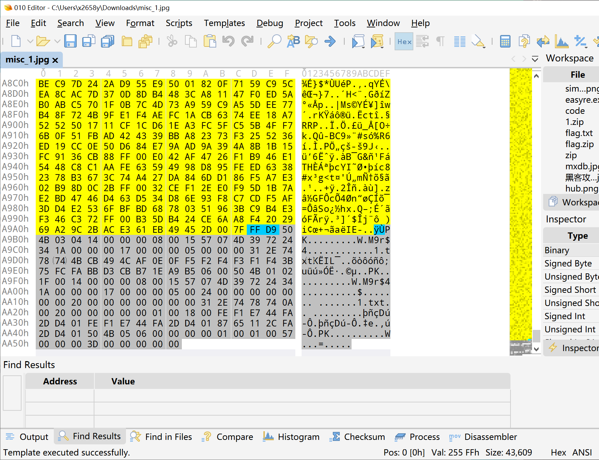
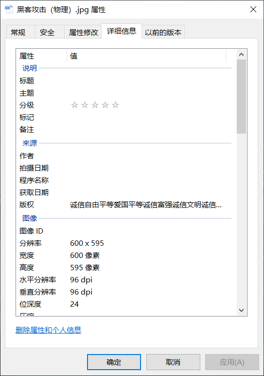
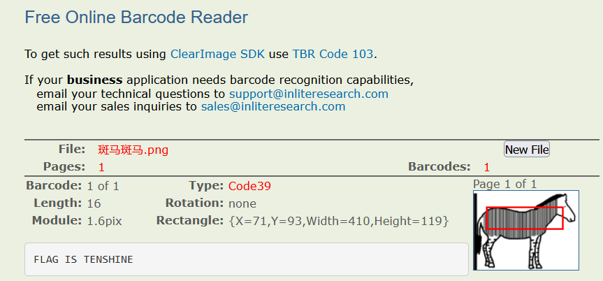
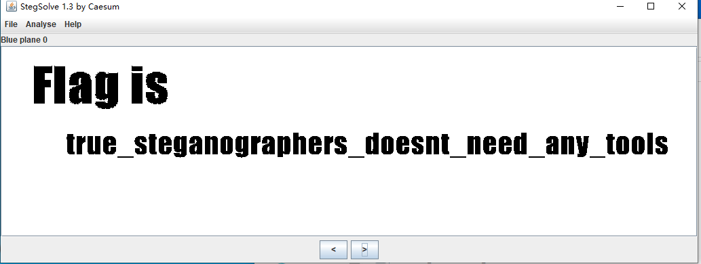
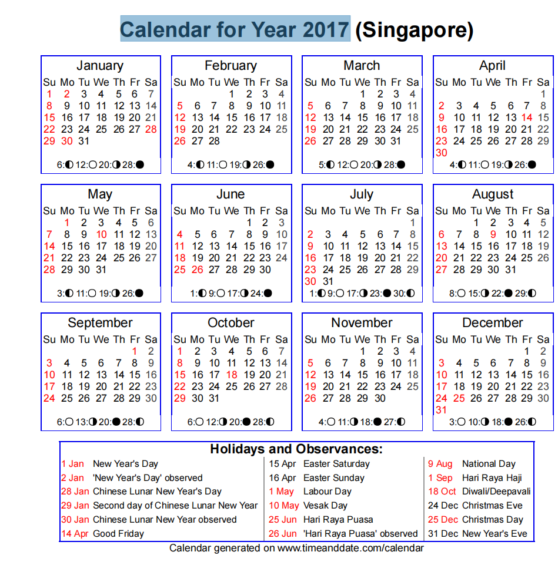
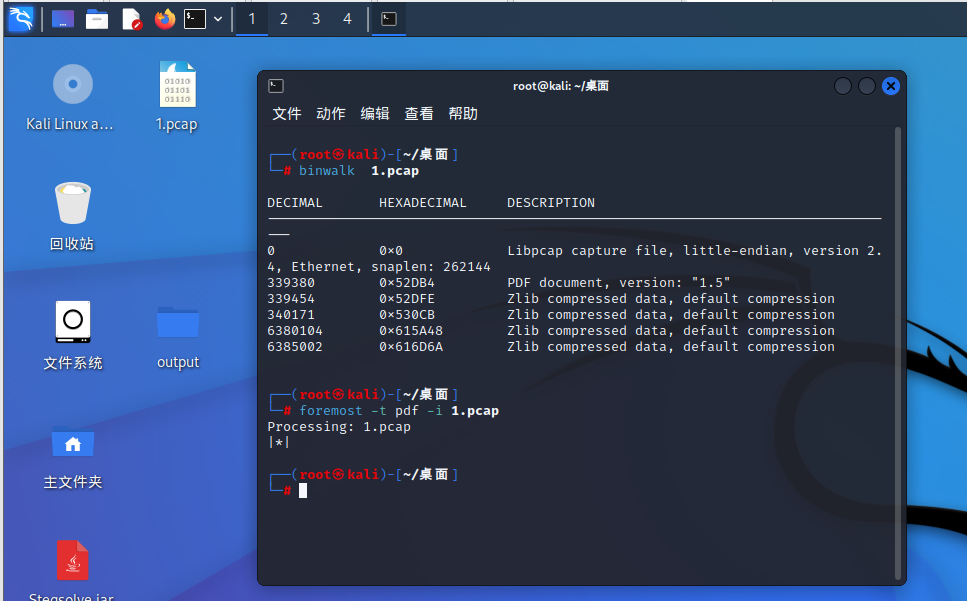
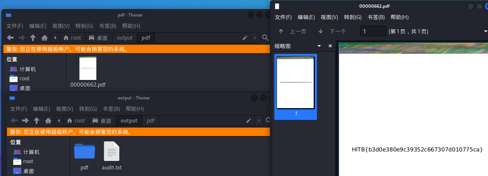

难度1
记两道润天杯校赛的题
1.misc_1
解压之后是一张图片，用01editor打开，由于是jpg图片，直接搜FFD9

看见后面有pk，得知是zip，直接另存为zip，打开就拿到flag了
2. misc_2
打开图片属性，看到这：

社会主义核心价值观加密，直接复制版权信息解密两次就行了，在线工具
在这里感谢x2658y大佬给讲题~
攻防世界
1.Banmabanma
一张图，先记事本打开，没收获，就去stegsolve看了一下，用手机扫也没结果，不知道是不是我的问题= =，ida也是一无所获
最后去网上看wp，发现了一个叫条形码在线阅读的网站 Barcode Reader. Free Online Web Application
把图片放进去就拿到flag了

2.适合作为桌面
先从简单的入手，记事本打开，没找到flag，然后用stegsolve打开，找到了一个二维码：

还是去上一题提到的那个网站扫一下二维码看看：

（stegsolve换图层的过程中我发现有的二维码是扫不了的）
得到了一串16进制的数字
1 | |
03F30D0A是pyc文件
pyc文件：是由Python文件经过编译后所生成的文件，众所周知Python的运行性能不如编译性语言(比如C语言)，所以Python在程序执行结束后会把字节码写入到硬盘中，保存为.pyc文件，目的是下一次再执行python xxx.py程序时，Python会先在目录下找xxx.pyc文件来执行
01editor打开如下：

依然在这里感谢x2658y，要不然我还傻了吧唧写成txt，正确做法应该是放到01editor另存为pyc文件
然后去反编译：
得到如下代码：
1 | |
注释提到是python2.7，所以直接去在线编译
这里flag()要顶格，我不知道为什么，但我大为震撼
最后得到了flag：
1 | |
3.心仪的公司
这道题是wireshark的包，借此机会学习一下wireshark的颜色规则
这个流量包叫webshell，故在显示过滤器中输入：
1 | |

追踪TCP流，找到flag

还有一种方法，在kali里输入
1 | |
命令的意思是在webshell这个包里过滤含有”{“的字符串，然后输出
这里我是照着大佬们的wp写的，但是我这里输出了很多行，所以我改一下：
1 | |

这里有点面向结果了，正常解的话应该是先grep”flag“，可以看到没收获，这时可以试试fl4g
strings命令 在对象文件或二进制文件中查找可打印的字符串。字符串是4个或更多可打印字符的任意序列，以换行符或空字符结束。
管道符：|
作用：管道是一种通信机制，通常用于进程间的通信。它表现出来的形式将前面每一个进程的输出（stdout）直接作为下一个进程的输入
ls / | grep “y“
grep 指令用于“过滤”
grep 语法：grep 选项 文件路径/内容
针对上面这个命令说明：
① 以管道作为分界线，前面的命令有个输出，后面需要先输入（缺少查找范围），然后再过滤，最后再输出，通俗的讲就是管道前面的输出就是后面指令的输入。
为了便于理解，上述的指令变相实现可以如下：
ls / > xxx.txt 将ls /的结果保存到xxx.txt文件中
grep “y” xxx.txt 使用grep指令搜索xxx.txt中的包含y的行
4.pure_color
是一张图片，直接放到stegsolve中

比较简单flag{true_steganographers_doesnt_need_any_tools}
不过这个题的flag挺有意思，他说真正的隐写技师不需要任何工具 [狗头]
5.2017_Dating_in_Singapore
题目名字叫新加坡2017年的日历，打开也是个日历，有点意思

6.simple_transfer
题目描述: 文件里有flag，找到它。
下载了一个pcap的流量包，网上的wp都过滤了很多nfs，然后找到了file.pdf，这也是后面为什么分离pdf的原因，但是我这就两条，我不懂
直接扔到kali里输入命令：
1 | |
发现有一个pdf文件，接着输入
1 | |
-t为指定文件类型，-i是指定输入，-o是指定输出，这里没指出，默认给出output文件夹：

然后打开文件夹：
